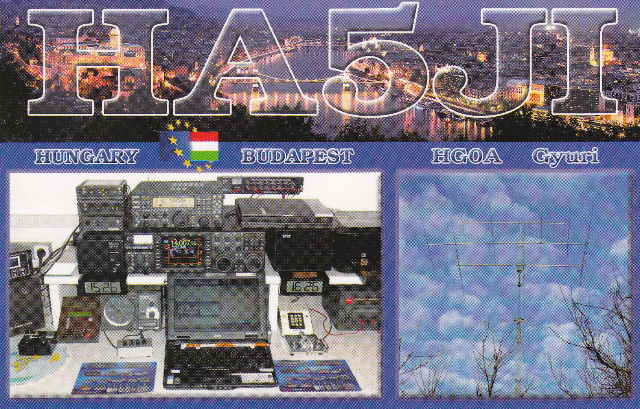

Flash ! DX


 |
|
|
|
 |
|
|
[Back Issues May.2014]
TIME:UTC(JST-09:00)
Report from JA1RJU(PM95sq)
31.May.2014(15:00b)
Report from JA1RJU(PM95sq)
30.May.2014(15:00d)
VR2XMT 01:09 50.115 SSB @ RS59+
S59A 05:56 50.100 CW
LZ1QI 06:21 50.090 CW CQ JA
DL3OF 06:39 50.082 CW
S59A 06:54 50.100 CW CQ JA
S53K 07:30 50.096 CW CQ
------------------------------------------------------------
K0HA 2351Z 50092.0 JA1.2-
(SM7FJE 0451Z 50198.0 WSJT JR6EXN (EME QSO. -24dB)
S57RR 0538Z 50085.0 CW JA7.8
S59A 0552Z 50100.0 CW JA1-4
UT9FJ 0601Z 50096.5 CW JA6.7.0
OK1FD 0611Z 50087.0 CW JA8
DK8NE 0623Z 50096.5 CW JA0
DD6EX 0631Z 50082.0 CW JA1-
S59A 0636Z 50100.2 CW JA1-
SP1MGM 0646Z 50082.0 CW JA1-
KH6SX 0718Z 50110.0 CW JA7
DL6ZXG 0719Z 50082.0 CW JA1-
S53K 0723Z 50096.1 CW JA1-
UK8OM 0735Z 50088.0 CW JA6.7
-------------------------------------------------------------
Report from JA1RJU(PM95sq)
29.May.2014(15:00b)
HL1AEY 08:40 50.087 CW
BH4QFI 10:00 50.110 SSB/CW
BG9HKP 10:09 50.111 CW @ RST599
BA4SI 10:11 50.111 CW RST599
Report from JA1RJU(PM95sq)
28.May.2014(15:00b)
Report from JA1RJU(PM95sq)
27.May.2014(15:00c)
I6WJB 06:20 50.085 CW @ RST599 QSB
I4EAT 06:40 50.082 CW
KG6DX 08:14 50.082 CW RST599
Report from JA1RJU(PM95sq)
26.May.2014(15:00b)
VK8VF/b 12:00- 50.310 CW Beacon
Report from JA1RJU(PM95sq)
25.May.2014(15:00c)
IK0FTA 08:00 50.086 CW weak
VK4RHT/b 08:50- 50.281 CW Beacon RST599
VK4RTL/b 08:50- 50.282 CW Beacon
Report from JA1RJU(PM95sq)
24.May.2014(15:00c)
DV7/BG9GXM 08:17 50.110 SSB @ RS59
Report from JA1RJU(PM95sq)
23.May.2014(15:00c)
VK6RSX/b 12:40- 50.304 CW Beacon
VK8VF/b 12:40- 50.310 CW Beacon
Report from JA1RJU(PM95sq)
22.May.2014(15:00c)
Z3/PA3FPQ 01:25 50.194 WSJT EME (Report from JR6EXN)
(NA6XX.K6QXY.N6ML.W6XK... 01:50-02:35 CW JA1.2.6.7.8.0)
K6FV/b 03:10- 50.069 CW Beacon JA1-8
Report from JA1RJU(PM95sq)
21.May.2014(15:00d)
VK6RSX/b 08:40- 50.304 CW Beacon
VK4RHT/b 12:00- 50.281 CW Beacon
VK8VF/b 12:00- 50.310 CW Beacon
VK8MS 12:33 50.110 CW CQ
Report from JA1RJU(PM95sq)
20.May.2014(15:00e)
VK6RSX/b 08:32- 50.304 CW Beacon
VK4RHT/b 08:50- 50.281 CW Beacon RST599
VK4RTL/b 08:50- 50.282 CW Beacon
VK6RSX/b 08:50- 50.304 CW Beacon
VK4WDM 09:12 50.110 SSB CQ
VK4RHT/b 08:50- 50.281 CW Beacon
VK6RSX/b 11:20- 50.304 CW Beacon
VK4RHT/b 13:15- 50.281 CW Beacon
VK6RSX/b 13:15- 50.304 CW Beacon
VK8VF/b 13:15- 50.310 CW Beacon
DU1EV/B 13:20- 50.008 CW beacon
Report from JA1RJU(PM95sq)
19.May.2014(15:00d)
VK6RSX/b 08:05- 50.304 CW Beacon
VK4RHT/b 08:35- 50.281 CW Beacon RST599
VK4RTL/b 08:43- 50.282 CW Beacon
VK4RHT/b 11:20- 50.281 CW Beacon RST599
VK4RTL/b 11:20- 50.282 CW Beacon
VK6RSX/b 11:20- 50.304 CW Beacon
VK8VF/b 11:20- 50.310 CW Beacon
Report from JA1RJU(PM95sq)
18.May.2014(15:00b)
Report from JA1RJU(PM95sq)
17.May.2014(15:00c)
VK6RSX/b 07:30- 50.304 CW Beacon
VK6DVR 09:23 50.110 SSB CQ
VK6RSX/b 09:25- 50.304 CW Beacon
Report from JA1RJU(PM95sq)
16.May.2014(15:00f)
VK4RHT/b 08:00- 50.281 CW Beacon RST599
VK4RTL/b 08:00- 50.282 CW Beacon
VK6RSX/b 08:00- 50.304 CW Beacon
VK4AFL 08:16 50.110/177 SSB
VK4EK 08:22 50.110 SSB RS59+
VK4AMG 08:24 50.110 CW CQ
VK6DVR 08:25 50.110 SSB CQ DX
VK4YH 08:27 50.110 SSB CQ
VK4AMG 08:34 50.107/165 CW/SSB CQ
VK6DVR 09:10 50.110 SSB CQ
VK4RHT/b 09:35- 50.281 CW Beacon
VK4RTL/b 09:35- 50.282 CW Beacon
VK4TVL/b 09:35- 50.295 CW Beacon
VK6RSX/b 09:35- 50.304 CW Beacon
Report from JA1RJU(PM95sq)
15.May.2014(15:00c)
VK4RHT/b 08:30- 50.281 CW Beacon
VK4RTL/b 08:30- 50.282 CW Beacon
VK4TVL/b 08:30- 50.295 CW Beacon
VK6RSX/b 08:30- 50.304 CW Beacon
VK4BLK 09:32 50.110 CW CQ RST599
VK8VF/b 12:55- 50.310 CW Beacon
Report from JA1RJU(PM95sq)
14.May.2014(15:00c)
VK6OX 04:48 50.110 CW CQ CQ
VK6RSX/b 04:48- 50.304 CW Beacon
VK6KXW 04:54 50.110 CW CQ
VK6RSX/b 07:00- 50.304 CW Beacon RST599
Report from JA1RJU(QM06cb)
13.May.2014(15:00b)
Report from JA1RJU(QM06cb)
12.May.2014(15:00b)
Åù8J1ITUâ^óp
VK4RHT/b 05:00- 50.281 CW Beacon
FW5JJ 09:23 50.096 CW
Report from JA1RJU(QM06cb)
11.May.2014(15:00b)
Åù8J1ITUâ^óp
F5MYK/MM 08:00 50.115 CW CQ
DS4EOI/2 08:05 50.107 CW CQ JA
BU2BE 08:30 50.130 SSB RS59
BV3CE 10:50 50.125 SSB
Report from JA1RJU(PM95sq)
10.May.2014(15:00f)
VK6KXW 06:45 50.110 CW CQ CQ
VK6RSX/b 07:40- 50.304 CW Beacon
V650XG 07:45 50.115 CW Pohnpei (QSL via JA1XGI)
V650XG 08:03 50.115 CW @ RST599
FK8HA 08:10 50.110 CW CQ
FK8SIX/b 08:10- 50.080 CW Beacon
V73SIX/b 08:10- 50.012 CW Beacon
NH0J 08:14 50.130 CW @ RST599 (Tinian I.)
NH0J 08:34 50.130 SSB @ QSB (QSL via JJ2VLY)
FK8HA 08:39 50.110 CW
VK4JU 08:50 50.105 CW RST599
VK4RHT/b 08:50- 50.281 CW Beacon
VK4RTL/b 08:50- 50.282 CW Beacon
FK8HA 09:00 50.110 CW CQ
VK4BLK 09:18 50.090 WSJT CQ QG56 (-4dB)
VK4BLK 09:29 50.090 WSJT CQ QG56 (-18dB)
BM3GND 09:45 50.090 WSJT CQ PL04 (-13dB)
Report from JA1RJU(PM95sq)
09.May.2014(15:00b)
Report from JA1RJU(PM95sq)
08.May.2014(15:00c)
BU2BV 06:35 50.122 SSB
JR6YAG/b 06:45- 50.038 CW Beacon Okinawa(GL=PL36)
VK4RHT/b 10:30- 50.281 CW Beacon
VK4RTL/b 10:30- 50.282 CW Beacon
VK6RSX/b 10:30- 50.304 CW Beacon
Report from JA1RJU(PM95sq)
07.May.2014(15:00b)
HL2CFY 09:26 50.110 CW CQ
VK4RHT/b 13:17- 50.281 CW Beacon
BA4SE 13:19 50.110 CW CQ
Report from JA1RJU(PM95sq)
06.May.2014(15:00c)
VK4RHT/b 09:20- 50.281 CW Beacon
VK4RTL/b 09:20- 50.282 CW Beacon
VK6RSX/b 09:20- 50.304 CW Beacon
HL2CFY 09:46 50.110 CW CQ
VK4RHT/b 12:15- 50.281 CW Beacon
VK8VF/b 12:15- 50.310 CW Beacon
Report from JA1RJU(PM95sq)
05.May.2014(15:00e)
DS3COH 01:18 50.112 SSB CQ
HL2CFY 01:35 50.110 CW @ RST599
HL5FKP 01:37 50.140 SSB
DS3BNU/2 01:38 50.120 SSB
VK4RTL/b 06:10- 50.282 CW Beacon
VK4TVL/b 06:10- 50.295 CW Beacon
VK4BLK 06:29 50.090 WSJT -5dB CQ
VK4BLK 06:32 50.090 WSJT -6dB QSO with JA4***(-3dB)
JD1YBT 06:55 50.155 CW UP
JD1YBT 07:36 50.155 CW @ QSL via JP1IOF
VK4RHT/b 08:30- 50.281 CW Beacon
9W6EZ 08:58 50.110 SSB RS59
VK4BLK 09:28 50.105 CW CQ
DU7ET 09:28 50.107 CW CQ RST599
Report from JA1RJU(PM95sq)
04.May.2014(15:00e)
HL5BMX 02:59 50.105 CW @ RST599
BX2AB/1 03:12 50.115 CW @
JH1TEB/6 03:17 50.160 SSB @ RS59+(ìÏëÂìåìá=0336z QRTÅj
BV3CE 03:23 50.130 SSB
JR6YAG/b 03:25- 50.038 CW Beacon Okinawa
BV5OO/1 03:26 50.115 SSB @ RS59
BV2AQ 03:40 50.109 CW
FK8CP 07:17 50.110 CW CQ
VK4RTL/b 07:25- 50.282 CW Beacon
VK4TVL/b 07:25- 50.295 CW Beacon
VK6RSX/b 07:25- 50.304 CW Beacon
VK4WTN 07:48 50.089 WSJT -6dB QSO with JA3***
VK4FNQ 09:03 50.090 WSJT CQ -2dB
BU2BE 09:10 50.110/120 SSB CQ
HL2DBP 09:14 50.120 SSB CQ
BU2BE 09:27 50.120 SSB @ RS59
VK4RHT/b 09:30- 50.281 CW Beacon
VK4RTL/b 09:30- 50.282 CW Beacon
VK4TVL/b 09:30- 50.295 CW Beacon
VK6RSX/b 09:30- 50.304 CW Beacon
VK6OC 09:42 50.110 SSB
Report from JA1RJU(PM95sq)
03.May.2014(15:00f)
BV1EL 01:25 50.130 SSB @ RS59/59 OP.Suzuki
KH9/WA2YUN/B 07:55- 50.014 CW Beacon
DU7/PA0HIP 08:01 50.110 SSB RS59+ QSO with BD7
DU1EV/B 08:35- 50.008 CW Beacon
KH9/WA2YUN/B 08:35- 50.014 CW Beacon
JR6YAG/b 09:00- 50.036 CW Beacon Okinawa(GL=PL36)
HL2AVK 09:10 50.130 CW CQ CQ
JR1LZK/6 09:18 50.153 CW @ RST599 Miyakojima (JCC-4714)
JD1BLY 09:25 50.145 SSB
JD1BLY 09:26 50.145 CW @ RST599 Chichijima (QSL via JI5RPT)
VK6DVR 09:38 50.110 SSB CQ
VK4RHT/b 09:38- 50.281 CW Beacon
VK6OC 09:40 50.110 SSB CQ
VR2ZXP 09:43 50.110 SSB
VK6RSX/b 09:45- 50.304 CW Beacon
VK8VF/b 12:15- 50.310 CW Beacon
Report from JA1RJU(PM95sq)
02.May.2014(15:00b)
Report from JA1RJU(PM95sq)
01.May.2014(15:00c)
Åù8J1ITUâ^ópäJénÅÅ01.May-31.May
----------------------------------------------------------------
VK6RSX/b 06:10- 50.304 CW Beacon
JI1FGX/DU9 07:34 50.110 SSB CQ (QSL via JJ2VLY)
VK4BLK 07:35 50.110 CW CQ
9W6EZ 07:48 50.110 SSB
FK8CP 08:08 50.110 CW CQ EU
P29NO 08:28 50.110 CW
P29NO 08:37 50.110 CW @ UP1 (QSL via EA5GL)
VK4RHT/b 08:50- 50.281 CW Beacon
VK4RTL/b 08:50- 50.282 CW Beacon
VK6RSX/b 08:50- 50.304 CW Beacon